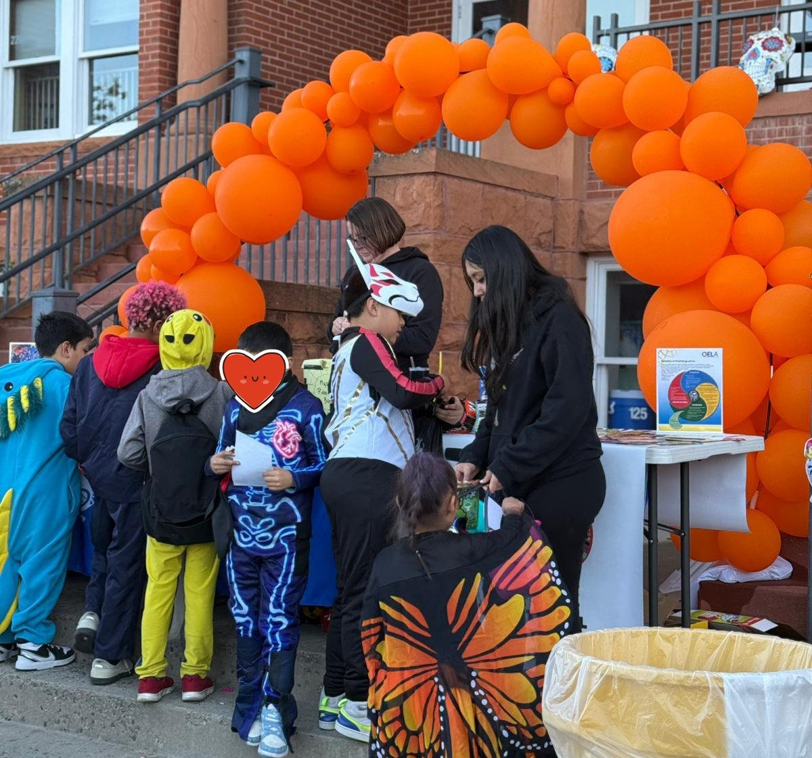
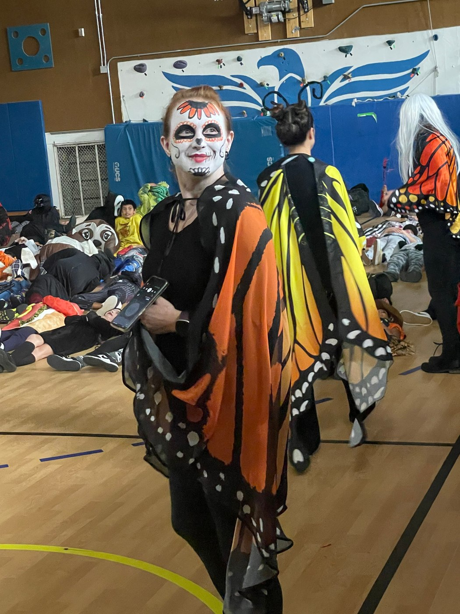
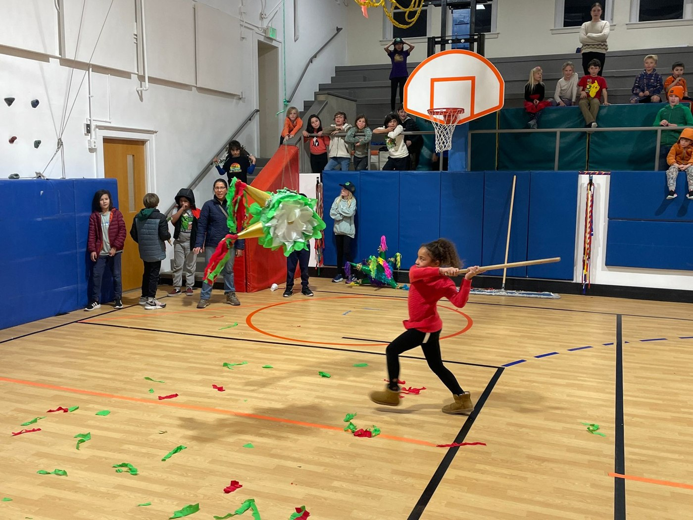
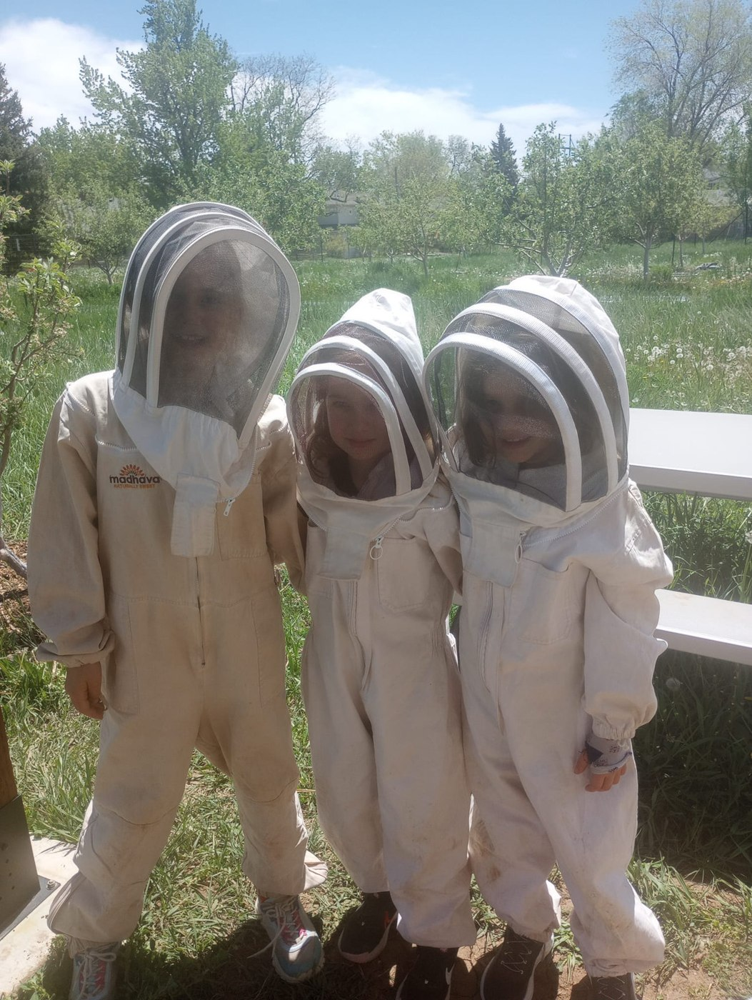
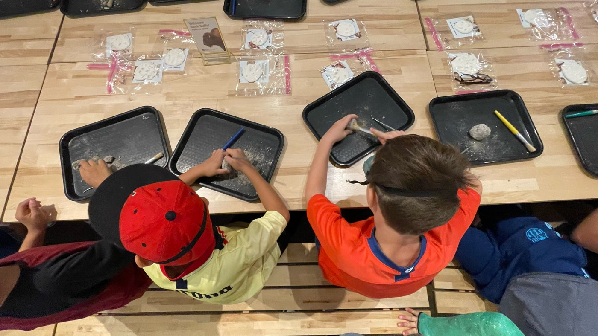

Uni Hill PTA · Familia y comunidad
We help kids find their superpowers.
The Uni Hill PTA is the quiet engine behind Boulder's oldest bilingual school — funding classrooms, throwing the fiestas, and making sure every family belongs.




Volunteer · Voluntariado
An hour of your time is a big deal.
No experience needed, no Spanish (or English!) required. Pick something small — it all adds up to something big for our kids.
Help with CU Football parking
Park cars on Buffs game days — a couple of hours that fund our school all year. Go Buffs, go Uni Hill.
Help in classrooms
Read with kids, prep art projects, chaperone field trips.
Support school events
Set up, serve, cheer, clean up — fiestas, movie nights, and book fairs need many hands.
Join a committee
Rainbow Press, Marketing/Storytelling, Events, etc. — there's a seat for you.

Donate · Donaciones
Where your money actually goes.
100% stays at Uni Hill
Every dollar funds supplies, field trips for every kid, teacher appreciation and scholarships so no student misses out.
Donate now · Dona ahora